MedGuide - Osteologiya Kartochkalari
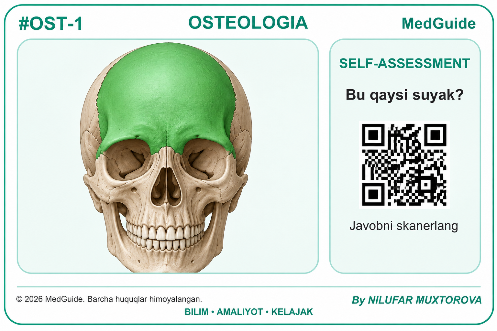
#OST-1: Os frontale (Peshona suyagi)
- LA: Os frontale (Impar)
- UZ: Peshona suyagi (toq)
- EN: Frontal bone (Unpaired)
- RU: Лобная кость (Непарный)
- TR: Alın kemiği (Tek)
Squama frontalis (Peshona tangachasi), Partes orbitales (Ko'z kosa qismlari), Pars nasalis (Burun qismi), Sinus frontalis (Peshona havo yo'li bo'shlig'i).
Incisura / Foramen supraorbitale ➔ N. supraorbitalis (V1 tarmoqlari).

#OST-2: Os parietale (Teppa suyagi)
- LA: Os parietale (Par)
- UZ: Teppa suyagi (juft)
- EN: Parietal bone (Paired)
- RU: Теменная кость (Парный)
- TR: Yan kafa kemiği (Çift)
Tuber parietale (Teppa do'ngchasi), Linea temporalis superior et inferior, Margo sagittalis, squamosus, frontalis, occipitalis.
Foramen parietale (Parietal teshik) ➔ Vena emissaria parietalis (venoz oqim).
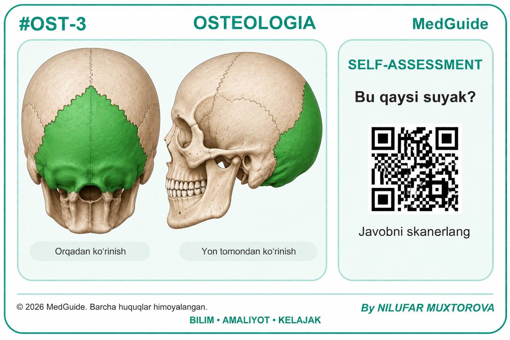
#OST-3: Os occipitale (Ensa suyagi)
- LA: Os occipitale (Impar)
- UZ: Ensa suyagi (toq)
- EN: Occipital bone (Unpaired)
- RU: Затылочная кость (Непарный)
- TR: Ard kafa kemiği (Tek)
Pars basilaris (Asosiy qism), Partes laterales (Yon qismlar) — Condylus occipitalis, Squama occipitalis (Ensa tangachasi).
Foramen magnum ➔ Orqa miya va bosh miya tutashuvi, umurtqa arteriyalari; Canalis n. hypoglossi ➔ N. hypoglossus (XII).

#OST-4: Os temporale (Chakka suyagi)
- LA: Os temporale (Par)
- UZ: Chakka suyagi (juft)
- EN: Temporal bone (Paired)
- RU: Височная кость (Парный)
- TR: Şakak kemiği (Çift)
Pars squamosa (Tangacha qism), Pars tympanica (Tovush yo'li qismi), Pars petrosa / Pyramis (Tosh qism / Piramida), Processus styloideus va mastoideus.
Canalis caroticus ➔ A. carotis interna; Meatus acusticus internus ➔ N. facialis (VII), N. vestibulocochlearis (VIII); Canalis facialis ➔ N. facialis.
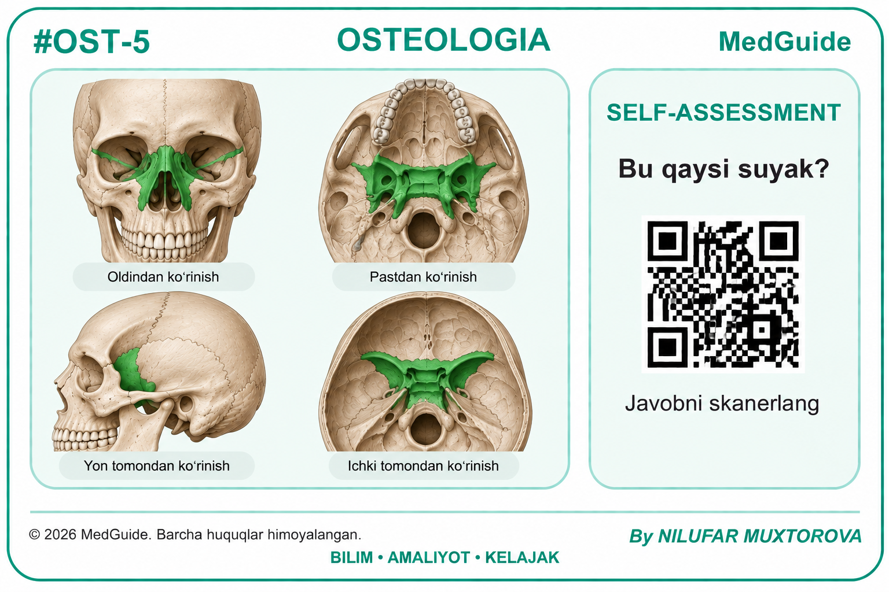
#OST-5: Os sphenoidale (Ponasimon suyak)
- LA: Os sphenoidale (Impar)
- UZ: Ponasimon suyak (toq)
- EN: Sphenoid bone (Unpaired)
- RU: Клиновидная кость (Непарный)
- TR: Temel kemik (Tek)
Corpus (Tana) — Sella turcica, Alae majores (Katta qanotlar), Alae minores (Kichik qanotlar), Processus pterygoidei.
Canalis opticus ➔ N. opticus (II); Fissura orbitalis superior ➔ III, IV, V1, VI juft bosh miya nervlari; Foramen rotundum ➔ N. maxillaris (V2); Foramen ovale ➔ N. mandibularis (V3).

#OST-6: Os ethmoidale (G'alvirsimon suyak)
- LA: Os ethmoidale (Impar)
- UZ: G'alvirsimon suyak (toq)
- EN: Ethmoid bone (Unpaired)
- RU: Решетчатая кость (Непарный)
- TR: Kalbur kemiği (Tek)
Lamina cribrosa (G'alvirsimon plastinka), Lamina perpendicularis (Tik plastinka), Labyrinthus ethmoidalis (Cellulae ethmoidales).
Foramina cribrosa ➔ Fila olfactoria (I juft hid bilish nervi tolalari).
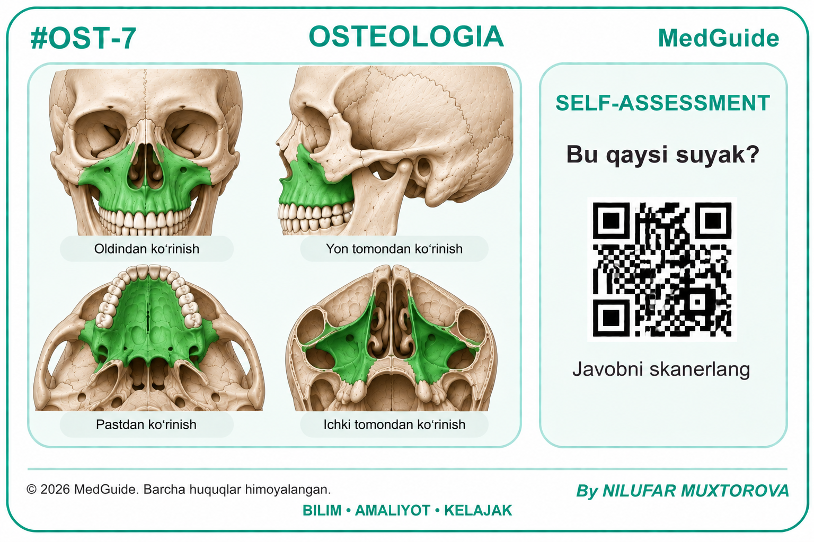
#OST-7: Maxilla (Yuqori jag')
- LA: Maxilla (Par)
- UZ: Yuqori jag' (juft)
- EN: Upper jaw (Maxilla) (Paired)
- RU: Верхняя челюсть (Парный)
- TR: Üst çene kemiği (Çift)
Corpus maxillae (Sinus maxillaris), Processus frontalis, zygomaticus, alveolaris, palatinus.
Foramen infraorbitale ➔ N. infraorbitalis (V2 tarmog'i); Canalis incisivus ➔ N. nasopalatinus.

#OST-8: Mandibula (Pastki jag')
- LA: Mandibula (Impar)
- UZ: Pastki jag' (toq)
- EN: Lower jaw (Mandible) (Unpaired)
- RU: Нижняя челюсть (Непарный)
- TR: Alt çene kemiği (Tek)
Corpus mandibulae (Tana), Ramus mandibulae (Tarmoq), Processus condylaris va coronoideus.
Foramen mandibulare ➔ N. alveolaris inferior; Foramen mentale ➔ N. mentalis.

#OST-9: Os zygomaticum (Yonoq suyagi)
- LA: Os zygomaticum (Par)
- UZ: Yonoq suyagi (juft)
- EN: Cheekbone (Zygomatic) (Paired)
- RU: Скуловая кость (Парный)
- TR: Elmacık kemiği (Çift)
Facies lateralis, orbitalis, temporalis; Processus frontosphenoidalis, maxillaris, temporalis.
Foramen zygomaticoorbitale ➔ N. zygomaticofacialis va zygomaticotemporalis.
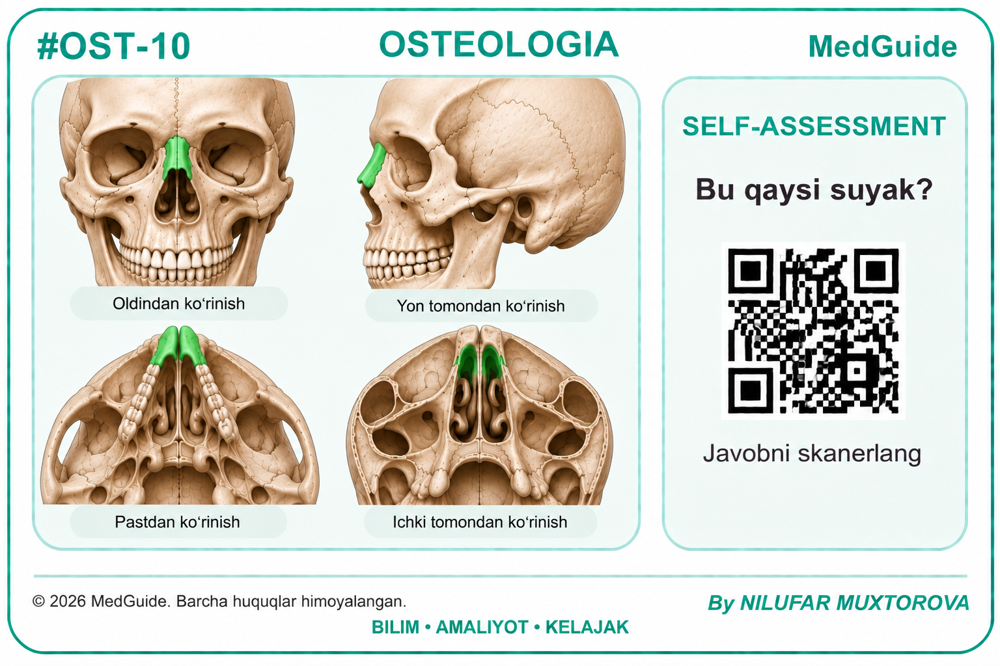
#OST-10: Os nasale (Burun suyagi)
- LA: Os nasale (Par)
- UZ: Burun suyagi (juft)
- EN: Nasal bone (Paired)
- RU: Носовая кость (Парный)
- TR: Burun kemiği (Çift)
Yuqori qismi qalin va tor, pastki qismi kengaygan plastinka shaklida. Tashqi yuzasi biroz qavariq, ichki yuzasi burun bo'shlig'iga qaragan.
Foramen nasale ➔ Tomir va nerv shoxchalarining o'tish teshikchalari.

#OST-11: Os lacrimale (Ko'z yosh suyagi)
- LA: Os lacrimale (Par)
- UZ: Ko'z yosh suyagi (juft)
- EN: Lacrimal bone (Paired)
- RU: Слезная кость (Парный)
- TR: Gözyaşı kemiği (Çift)
Crista lacrimalis posterior, Sulcus lacrimalis.
Canalis nasolacrimalis hosil qilishda qatnashadi ➔ Ko'z yosh yo'li o'tadi.

#OST-12: Vomer (Dimog' suyagi / Sanoch)
- LA: Vomer (Impar)
- UZ: Dimog' suyagi (toq)
- EN: Vomer (Unpaired)
- RU: Сошник (Непарный)
- TR: Sapan kemiği (Tek)
Burun to'sig'ining suyak qismini hosil qiluvchi trapetsiyasimon yupqa suyak plastinkasi.
Maxsus yirik teshiklari yo'q, shilliq qavat tomirlari va nervlari o'tadigan mayda teshikchalari bor.
#OST-13: Os palatinum (Tanglay suyagi)
- LA: Os palatinum (Par)
- UZ: Tanglay suyagi (juft)
- EN: Palatine bone (Paired)
- RU: Небная кость (Парный)
- TR: Damak kemiği (Çift)
Lamina horizontalis (Gorizontal plastinka), Lamina perpendicularis (Tik plastinka).
Canalis palatinus major ➔ Nn. palatini majores va minores.

#OST-14: Concha nasalis inferior (Pastki burun chig'anog'i)
- LA: Concha nasalis inferior (Par)
- UZ: Pastki burun chig'anog'i (juft)
- EN: Inferior nasal concha (Paired)
- RU: Нижняя носовая раковина (Парный)
- TR: Alt burun istiridyesi (Çift)
Burun bo'shlig'ining yon devorida joylashgan alohida burmalar shaklidagi suyak.
Maxsus teshikka ega emas, shilliq qavat ostidan havo oqimini isitish va namlash vazifasini bajaradi.

#OST-15: Os hyoideum (Til osti suyagi)
- LA: Os hyoideum (Impar)
- UZ: Til osti suyagi (toq)
- EN: Hyoid bone (Unpaired)
- RU: Подъязычная кость (Непарный)
- TR: Dil kemiği (Tek)
Corpus (Tana), Cornua majora (Katta shoxlar), Cornua minora (Kichik shoxlar).
Suyak teshiklarga ega emas. Skeletda boshqa suyaklar bilan bevosita bo'g'im orqali birikmaydigan yagona suyak.

#OST-16: Malleus (Bolg'acha)
- LA: Malleus (Par)
- UZ: Bolg'acha (juft)
- EN: Malleus / Hammer (Paired)
- RU: Молоточек (Парный)
- TR: Çekiç kemiği (Çift)
Caput (Boshchasi), Manubrium (Dastasi), Processus lateralis et anterior.
O'rta quloq bo'shlig'ida joylashgan eshitish suyakchasi; teshiklari yo'q.
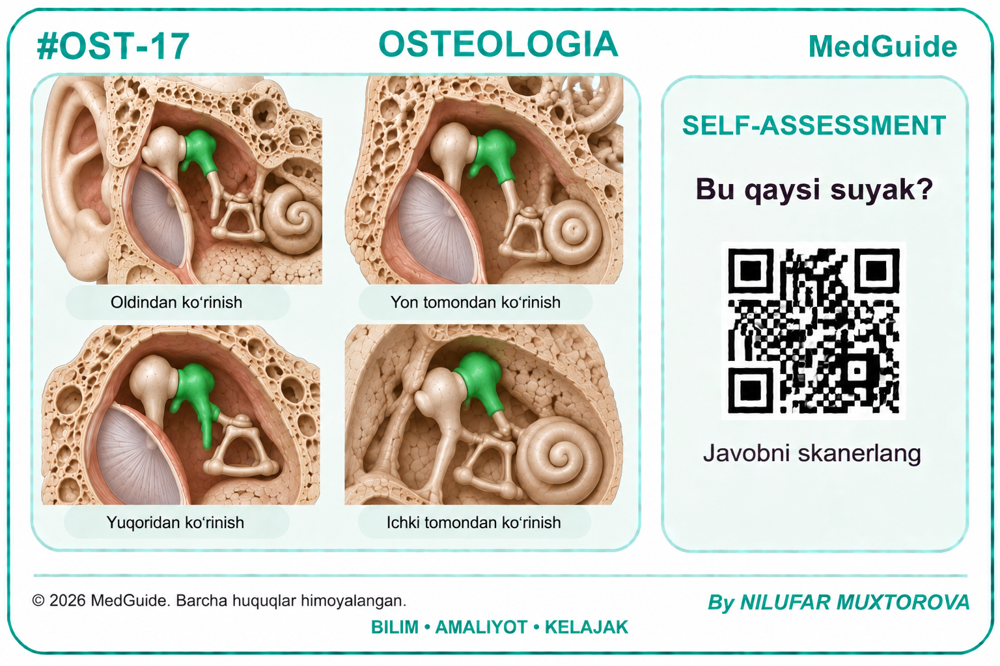
#OST-17: Incus (Sandon)
- LA: Incus (Par)
- UZ: Sandon (juft)
- EN: Incus / Anvil (Paired)
- RU: Наковальня (Парный)
- TR: Örs kemiği (Çift)
Corpus (Tana), Crus longum (Uzun oyoq), Crus breve (Qisqa oyoq).
Bolg'acha va uzangi orasida ko'prik vazifasini bajaruvchi o'rta quloq suyagi.

#OST-18: Stapes (Uzangi)
- LA: Stapes (Par)
- UZ: Uzangi (juft)
- EN: Stapes / Stirrup (Paired)
- RU: Стремя (Парный)
- TR: Üzengi kemiği (Çift)
Caput stapedis (Boshchasi), Crus anterius va posterius, Basis stapedis (Asosi / tovoni).
Oyoqchalari orasida kichik teshikcha bo'ladi. Asosi ichki quloqning oval oynachasiga yopishadi.

#OST-19: Vertebrae cervicales (Bo'yin umurtqalari)
- LA: Vertebrae cervicales (C1–C7)
- UZ: Bo'yin umurtqalari
- EN: Cervical vertebrae
- RU: Шейные позвонки
- TR: Boyun omurları
Corpus, arcus, foramen vertebrale; Processus spinosus, transversus. Mascus umurtqalar: C1 – Atlas, C2 – Axis.
Foramen processus transversi ➔ A. et v. vertebralis; Foramen vertebrale kanali ➔ Orqa miya.
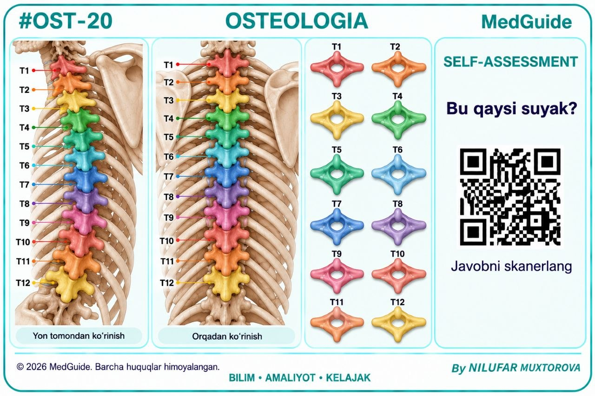
#OST-20: Vertebrae thoracicae (Ko'krak umurtqalari)
- LA: Vertebrae thoracicae (Th1–Th12)
- UZ: Ko'krak umurtqalari
- EN: Thoracic vertebrae
- RU: Грудные позвонки
- TR: Sırt omurları
Fovea costalis superior et inferior, Fovea costalis processus transversi, uzun processus spinosus.
Foramen vertebrale ➔ Orqa miya; Intervertebral teshiklar ➔ Nn. spinales.
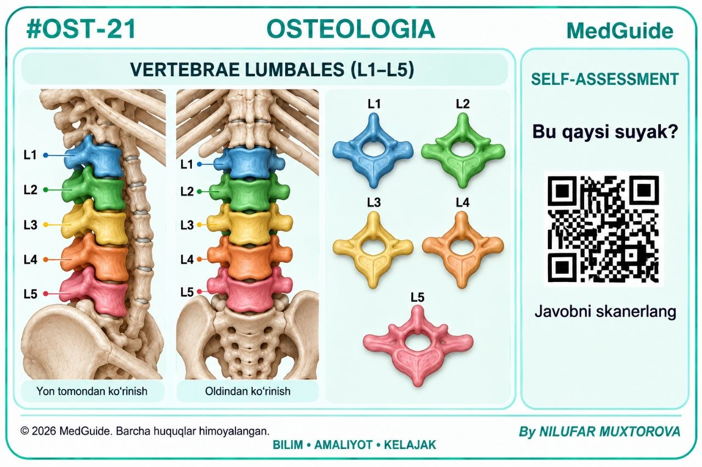
#OST-21: Vertebrae lumbales (Bel umurtqalari)
- LA: Vertebrae lumbales (L1–L5)
- UZ: Bel umurtqalari
- EN: Lumbar vertebrae
- RU: Поясничные позвонки
- TR: Bel omurları
Katta tana (Corpus vertebrae), qisqa va keng processus spinosus, processus accessorius va mamillaris.
Intervertebral teshiklar ➔ N. ischiadicus tarkibiga kiruvchi nerv ildizchalari (L4-S3).
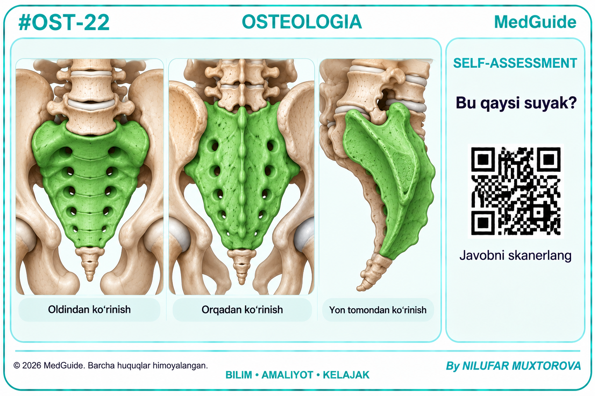
#OST-22: Os sacrum (Dumg'aza suyagi)
- LA: Os sacrum (Impar)
- UZ: Dumg'aza suyagi
- EN: Sacrum (Unpaired)
- RU: Крестец (Непарный)
- TR: Sağrı kemiği (Tek)
Basis ossis sacri, Apex, Facies pelvina va dorsalis, Lineae transversae.
Foramina sacralia anteriora et posteriora ➔ Qon tomirlari va dumg'aza nervlari shoxlari.

#OST-23: Os coccygis (Dum suyagi)
- LA: Os coccygis (Impar)
- UZ: Dum suyagi
- EN: Coccyx (Unpaired)
- RU: Копчик (Непарный)
- TR: Kuyruk sokumu (Tek)
Cornua coccygea (Dum suyagi shoxchalari), kichik uchburchak shaklidagi rudimentar suyak.
Maxsus yirik teshiklari yo'q, dumg'aza nervlarining oxirgi tolalari tarqaladi.
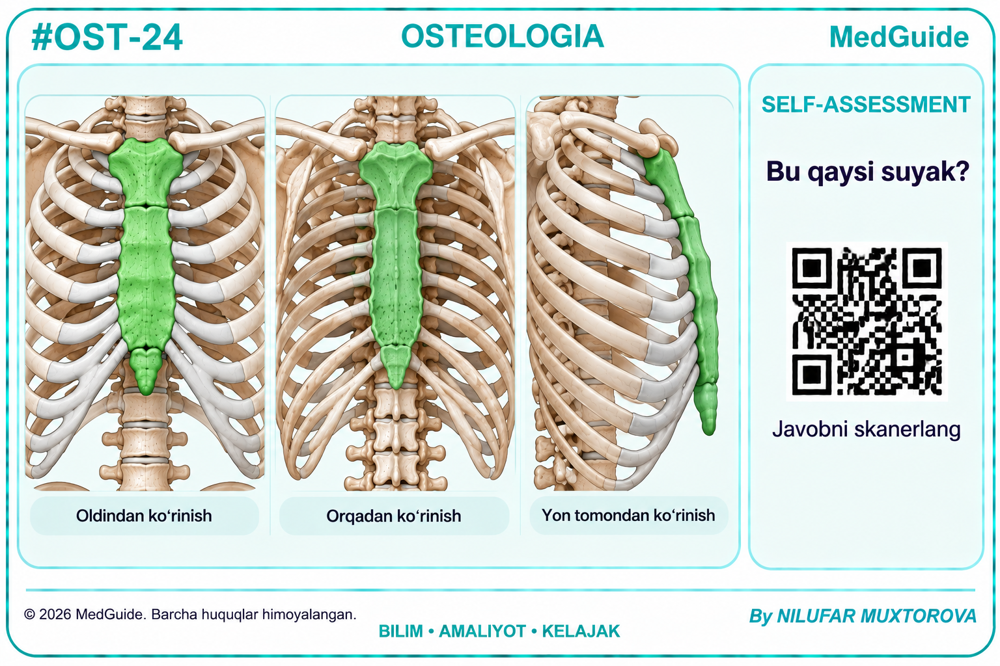
#OST-24: Sternum (To'sh suyagi)
- LA: Sternum (Impar)
- UZ: To'sh suyagi (toq)
- EN: Sternum (Unpaired)
- RU: Грудина (Непарный)
- TR: Göğüs kemiği (Tek)
Manubrium sterni, Corpus sterni, Processus xiphoideus (Xanjarismon o'simta).
Suyak teshiklarga ega emas. Orqa yuzasida ko'ks oralig'i organlari va yirik tomirlar joylashadi.

#OST-25: Costae (Qovurg'alar)
- LA: Costae (I–XII, juft)
- UZ: Qovurg'alar (juft)
- EN: Ribs (Paired)
- RU: Ребра (Парный)
- TR: Kaburgalar (Çift)
Caput costae, Collum, Tuberculum, Corpus costae (Sulcus costae).
Sulcus costae ostidan o'tadi ➔ N. intercostalis va V. et A. intercostales.
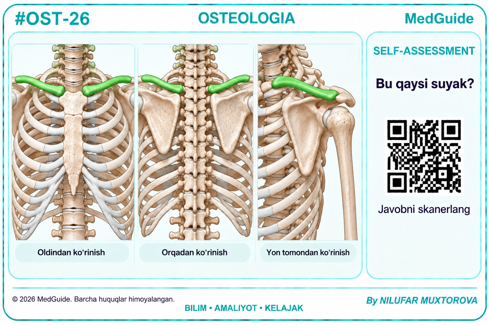
#OST-26: Clavicula (O'mrov suyagi)
- LA: Clavicula (Par)
- UZ: O'mrov suyagi (juft)
- EN: Clavicle (Paired)
- RU: Ключица (Парный)
- TR: Köprücük kemiği (Çift)
Extremitas sternalis, Corpus claviculae, Extremitas acromialis.
Maxsus teshigi yo'q. Ostidan plexus brachialisning yirik tomir-nerv tutami o'tadi.
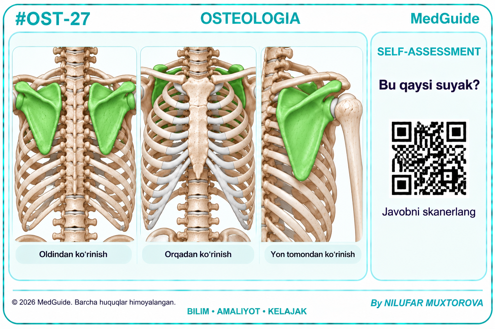
#OST-27: Scapula (Kurak suyagi)
- LA: Scapula (Par)
- UZ: Kurak suyagi (juft)
- EN: Scapula (Paired)
- RU: Лопатка (Парный)
- TR: Kürek kemiği (Çift)
Facies costalis va dorsalis, Processus coracoideus, Cavitas glenoidalis va Acromion.
Incisura scapulae ustidagi yopiq teshikchadan ➔ N. suprascapularis o'tadi.

#OST-28: Humerus (Yelka suyagi)
- LA: Humerus (Par)
- UZ: Yelka suyagi (juft)
- EN: Humerus (Paired)
- RU: Плечевая кость (Парный)
- TR: Kol kemiği (Çift)
Caput humeri, Collum anatomicum va chirurgicum, Corpus humeri, Condylus humeri.
Sulcus n. radialis o'tish sohasi ➔ N. radialis.

#OST-29: Radius (Bilak suyagi)
- LA: Radius (Par)
- UZ: Bilak suyagi (juft)
- EN: Radius (Paired)
- RU: Лучевая кость (Парный)
- TR: Döner kemik (Çift)
Caput radii, Tuberositas radii, Processus styloideus radii.
Distal qismida bilak arteriyasi va nerv shoxchalari o'tadi.

#OST-30: Ulna (Tirsak suyagi)
- LA: Ulna (Par)
- UZ: Tirsak suyagi (juft)
- EN: Ulna (Paired)
- RU: Локтевая кость (Парный)
- TR: Dirsek kemiği (Çift)
Olecranon, Processus coronoideus, Incisura trochlearis, Caput ulnae.
Foramen nutricium. Pastki qismida N. ulnaris yaqin joylashadi.
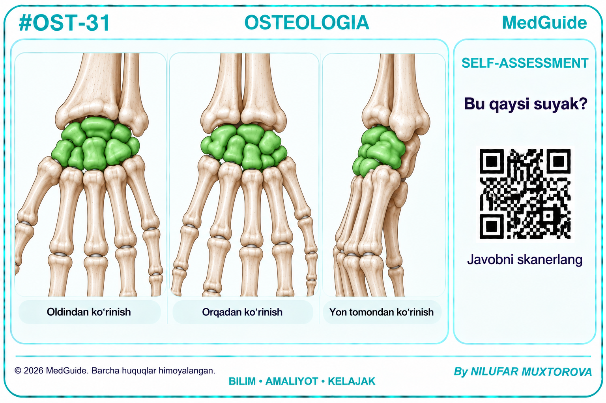
#OST-31: Ossa carpi (Kaft usti suyaklari)
- LA: Ossa carpi (16 ta)
- UZ: Kaft usti suyaklari
- EN: Carpal bones
- RU: Кости запястья
- TR: El bilek kemiği
Proksimal va distal qatordagi 8 tadan suyaklar (scaphoideum, lunatum, triquetrum, pisiforme, trapezium, trapezoideum, capitatum, hamatum).
Canalis carpi ➔ N. medianus va barmoq bukuvchi paylar.

#OST-32: Ossa metacarpi (Kaft suyaklari)
- LA: Ossa metacarpi (I–V)
- UZ: Kaft suyaklari
- EN: Metacarpals
- RU: Пястные кости
- TR: El tarak kemiği
Basis, Corpus, Caput. Qisqa naysimon suyaklar.
Oralig'idagi bo'shliqlardan kaft arteriyalari yoyi o'tadi.
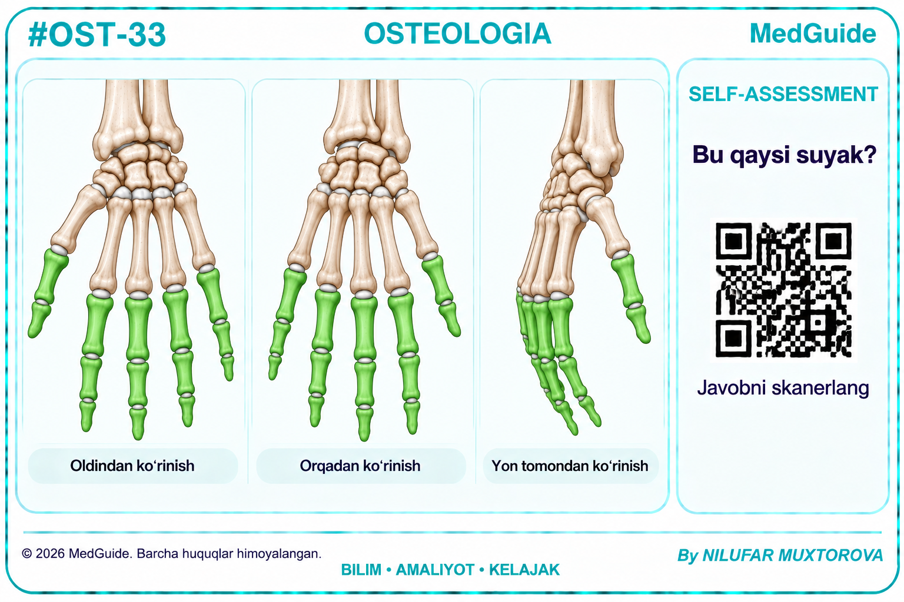
#OST-33: Phalanges digitorum (Barmoq falangalari)
- LA: Phalanges digitorum
- UZ: Barmoq falangalari
- EN: Phalanges of fingers
- RU: Фаланги пальцев кисти
- TR: Parmak kemiği
Phalanx proximalis, media, distalis.
Tomir va nervlar yon tomonlaridan o'tadi.

#OST-34: Os coxae (Chanoq suyagi)
- LA: Os coxae (Par)
- UZ: Chanoq suyagi
- EN: Hip bone
- RU: Тазовая кость
- TR: Kalça kemiği
Os ilium, Os ischii, Os pubis — Acetabulum va Foramen obturatorium.
Foramen obturatorium ➔ A., v. va n. obturatorius.
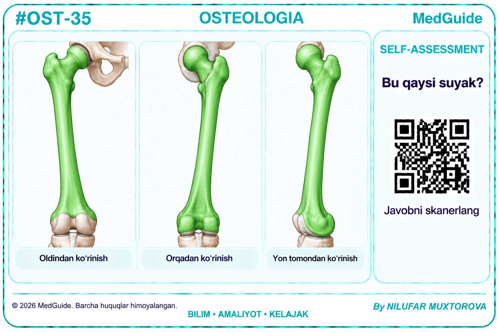
#OST-35: Femur (Son suyagi)
- LA: Femur (Par)
- UZ: Son suyagi
- EN: Femur
- RU: Бедренная кость
- TR: Uyluk kemiği
Caput femoris, Collum femoris, Trochanter major va minor, Condylus.
Fovea capitis femoris; N. ischiadicus yaqin o'tadi.

#OST-36: Patella (Tizza qopqog'i)
- LA: Patella (Par)
- UZ: Tizza qopqog'i
- EN: Patella
- RU: Надколенник
- TR: Diz kapağı
Basis patellae, Apex patellae. Organizmdagi eng yirik sesamoid suyak.
M. quadriceps femoris payi ichida rivojlanadi.

#OST-37: Tibia (Katta boldir suyagi)
- LA: Tibia (Par)
- UZ: Katta boldir suyagi
- EN: Tibia
- RU: Большеберцовая кость
- TR: Kaval kemiği
Condylus medialis va lateralis, Tuberositas tibiae, Malleolus medialis.
N. tibialis orqa qismidan o'tadi.
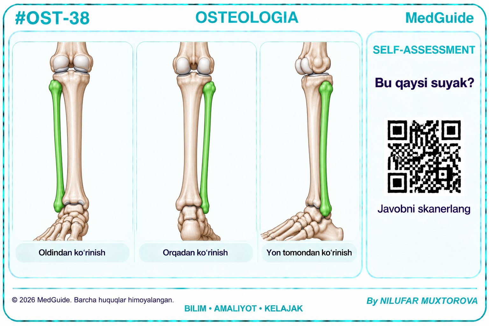
#OST-38: Fibula (Kichik boldir suyagi)
- LA: Fibula (Par)
- UZ: Kichik boldir suyagi
- EN: Fibula
- RU: Малоберцовая кость
- TR: Kamış kemiği
Caput fibulae, Corpus fibulae, Malleolus lateralis.
Collum fibulae sohasi orqali ➔ N. fibularis communis o'tadi.

#OST-39: Ossa tarsi (Oyoq to'piq suyaklari)
- LA: Ossa tarsi (14 ta)
- UZ: Oyoq to'piq suyaklari
- EN: Tarsal bones
- RU: Кости предплюсны
- TR: Ayak bilek kemiği
Talus, Calcaneus, Os naviculari, os cuboideum va ossa cuneiformia.
Canalis tarsi ➔ Tomir va nerv shoxchalari.
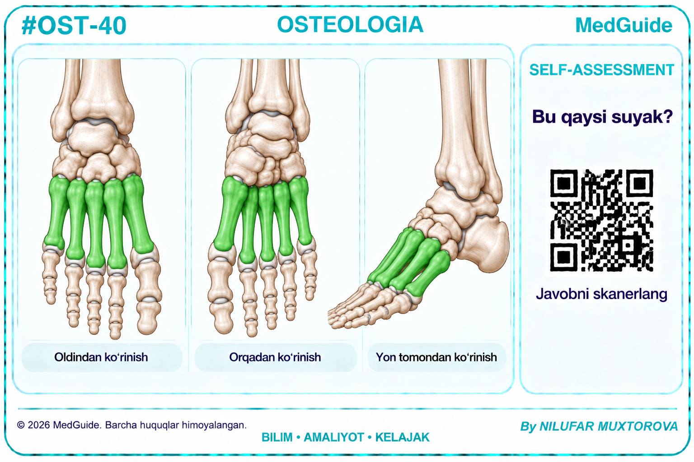
#OST-40: Ossa metatarsi (Oyoq kafti suyaklari)
- LA: Ossa metatarsi (I–V)
- UZ: Oyoq kafti suyaklari
- EN: Metatarsal bones
- RU: Плюсневые кости
- TR: Ayak tarak kemiği
Basis, Corpus, Caput.
Oyoq tagi va usti arteriyalari o'tish bo'shliqlari mavjud.

#OST-41: Phalanges digitorum pedis (Oyoq barmoq falangalari)
- LA: Phalanges digitorum pedis
- UZ: Oyoq barmoq falangalari
- EN: Phalanges of toes
- RU: Фаланги пальцев стопы
- TR: Parmak kemikleri
Phalanx proximalis, media, distalis.
Barmoq nerv-tomir tutamlari yon tomonlardan keladi.
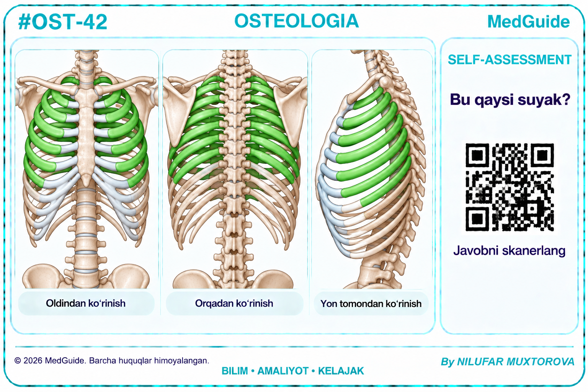
#OST-42: Costae verae (Chin qovurg'alar)
- LA: Costae verae (I–VII)
- UZ: Chin qovurg'alar
- EN: True ribs
- RU: Истинные ребра
- TR: Gerçek kaburgalar
To'g'ridan-to'g'ri to'sh suyagiga birikadi. Jami 7 juft.
Ostidan qovurg'aroq nerv-tomir tutami o'tadi.

#OST-43: Costae spuriae (Soxta qovurg'alar)
- LA: Costae spuriae (VIII–X)
- UZ: Soxta qovurg'alar
- EN: False ribs
- RU: Ложные ребра
- TR: Yalancı kaburgalar
O'zidan yuqoridagi qovurg'aning tog'ayiga qo'shilib boradi (arcus costalis).
Tog'aylararo birikmalar orqali yagona tog'ay yoyiga birlashadi.

#OST-44: Costae fluctuantes (Suzuvchi qovurg'alar)
- LA: Costae fluctuantes (XI–XII)
- UZ: Suzuvchi qovurg'alar
- EN: Floating ribs
- RU: Колеблющиеся ребра
- TR: Yüzen kaburgalar
Oldingi uchlari erkin, hech qanday suyakka birikmaydi.
Faqat umurtqa pog'onasining ko'krak qismiga orqa tomonidan birikadi.

#OST-45: Caput costae (Qovurg'a boshchasi)
- LA: Caput costae
- UZ: Qovurg'a boshchasi
- EN: Head of rib
- RU: Головка ребра
- TR: Kaburga başı
Umurtqa bilan tutashadigan orqa qismi, facies articularis capitis costae mavjud.
Cresta capitis costae yordamida ikkita yuzachaga bo'linadi.

#OST-46: Collum costae (Qovurg'a bo'yni)
- LA: Collum costae
- UZ: Qovurg'a bo'yni
- EN: Neck of rib
- RU: Шейка ребра
- TR: Kaburga boynu
Boshcha va do'ngcha orasidagi tor qism.
Ligamentlar orqali ko'ndalang o'simtaga mustahkamlanadi.
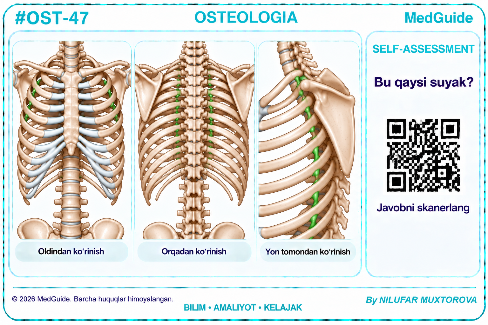
#OST-47: Tuberculum costae (Qovurg'a do'ngchasi)
- LA: Tuberculum costae
- UZ: Qovurg'a do'ngchasi
- EN: Tubercle of rib
- RU: Бугорок ребра
- TR: Kaburga kabartısı
Bo'yin va tana chegarasidagi orqa yuzada joylashgan do'ngcha.
Qovurg'aning umurtqa bilan harakatchan birikishini ta'minlaydi.
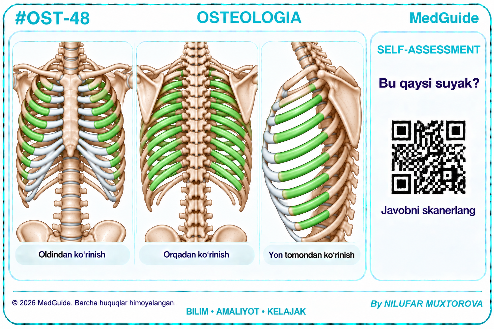
#OST-48: Corpus costae (Qovurg'a tanasi)
- LA: Corpus costae
- UZ: Qovurg'a tanasi
- EN: Body / Shaft of rib
- RU: Тело ребра
- TR: Kaburga gövdesi
Qovurg'aning eng uzun, yassi va egilgan qismi, sulcus costae o'tadi.
Sulcus costae ichida qovurg'aroq arteriyasi, venasi va nervi joylashadi.

#OST-49: Os scaphoideum (Qayiqsimon suyak)
- LA: Os scaphoideum (Carpeum)
- UZ: Qayiqsimon suyak
- EN: Scaphoid bone
- RU: Ладьевидная кость
- TR: Skafoid kemik
Kaft usti proksimal qatorining lateral qismida joylashgan.
Radius suyagining pastki uchi bilan bo'g'im hosil qiladi.
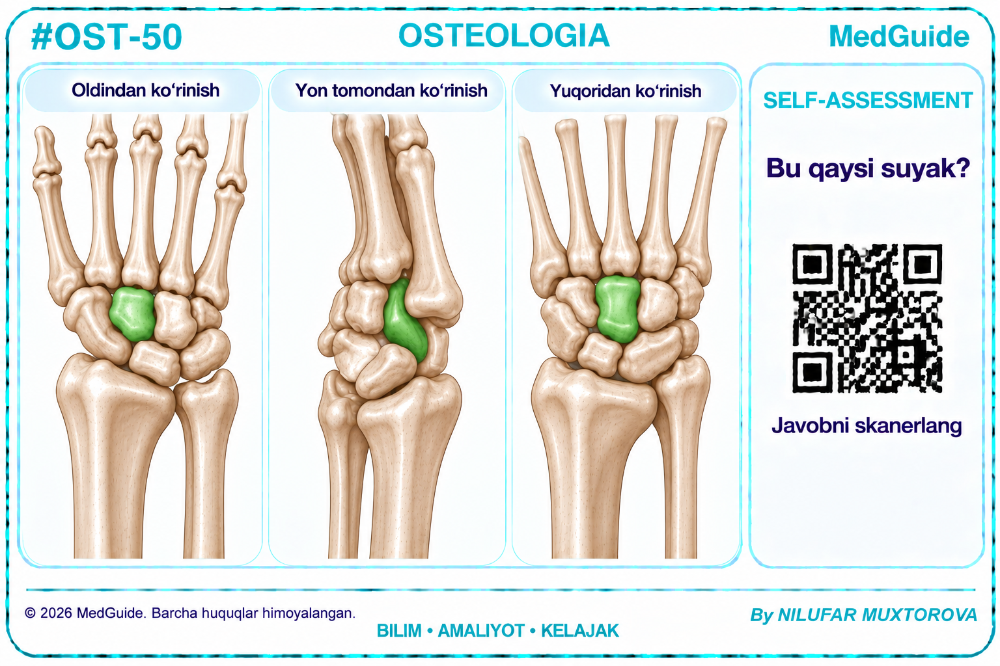
#OST-50: Os lunatum (Yarimoysimon suyak)
- LA: Os lunatum
- UZ: Yarimoysimon suyak
- EN: Lunate bone
- RU: Полулунная кость
- TR: Lunat kemik
Kaft usti proksimal qatorining markaziy qismida joylashgan.
Radius va boshqa kaft usti suyaklari bilan tutashadi.

#OST-51: Os triquetrum (Uchqir suyak)
- LA: Os triquetrum
- UZ: Uchqir suyak
- EN: Triquetral bone
- RU: Трехгранная кость
- TR: Triquetrum kemik
Piramida shaklidagi kaft usti suyagi, medial qismda joylashgan.
Noksimon suyak bilan oldingi yuzasidan tutashadi.

#OST-52: Os pisiforme (Nuxotsimon suyak)
- LA: Os pisiforme
- UZ: Nuxotsimon suyak
- EN: Pisiform bone
- RU: Гороховидная кость
- TR: Pisiform kemik
No'xatdek keladigan kichik sesamoid suyak.
Pay uchun blok vazifasini bajarib, muskullar kuchini oshiradi.

#OST-53: Os trapezoideum (Kichik trapetsiyasimon suyak)
- LA: Os trapezoideum
- UZ: Kichik trapetsiyasimon suyak
- EN: Trapezoid bone
- RU: Трапециевидная кость
- TR: Trapezoid kemik
Kaft usti distal qatorining ikkinchi suyagi, kichik to'rtburchak shaklda.
II-kaft suyagi asosi bilan tutashadi.

#OST-54: Os capitatum (Boshchali suyak)
- LA: Os capitatum
- UZ: Boshchali suyak
- EN: Capitate bone
- RU: Головчатая кость
- TR: Kapitat kemik
Kaft usti suyaklarining eng yirigi, markazda joylashadi.
Atrofidagi deyarli barcha kaft usti va III-kaft suyagi bilan bo'g'im hosil qiladi.

#OST-55: Os hamatum (Ilmoqli suyak)
- LA: Os hamatum
- UZ: Ilmoqli suyak
- EN: Hamate bone
- RU: Крючковидная кость
- TR: Hamat kemik
Distal qatorning medial qismida joylashgan, ilmoq o'simtasi mavjud.
Kaft usti kanalining lateral devorini hosil qilishda qatnashadi.
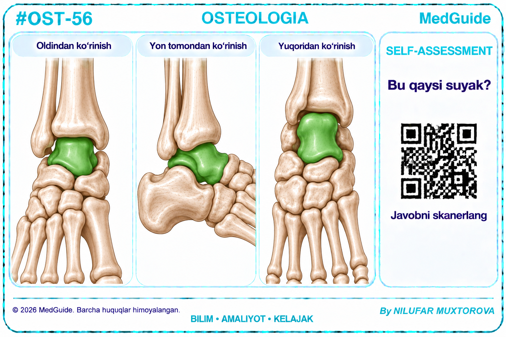
#OST-56: Talus (Oshiq suyagi)
- LA: Talus
- UZ: Oshiq suyagi
- EN: Talus / Ankle bone
- RU: Таранная кость
- TR: Aşık kemiği
Oyoq to'piq qismining eng yuqori suyagi, trochlea tali mavjud.
Qon tomirlar kirish sohasi cheklangan.
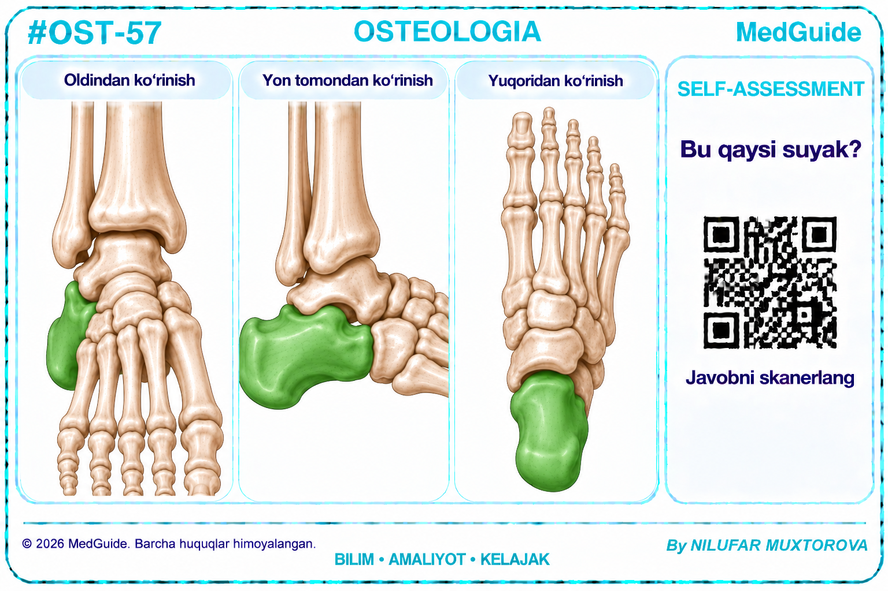
#OST-57: Calcaneus (Tovon suyagi)
- LA: Calcaneus
- UZ: Tovon suyagi
- EN: Calcaneus / Heel bone
- RU: Пяточная кость
- TR: Topuk kemiği
Tarsus suyaklarining eng yirigi, tovon do'ngligiga Achill payi birikadi.
Tananing og'irligini yerga uzatuvchi asosiy tayanch vazifasini bajaradi.
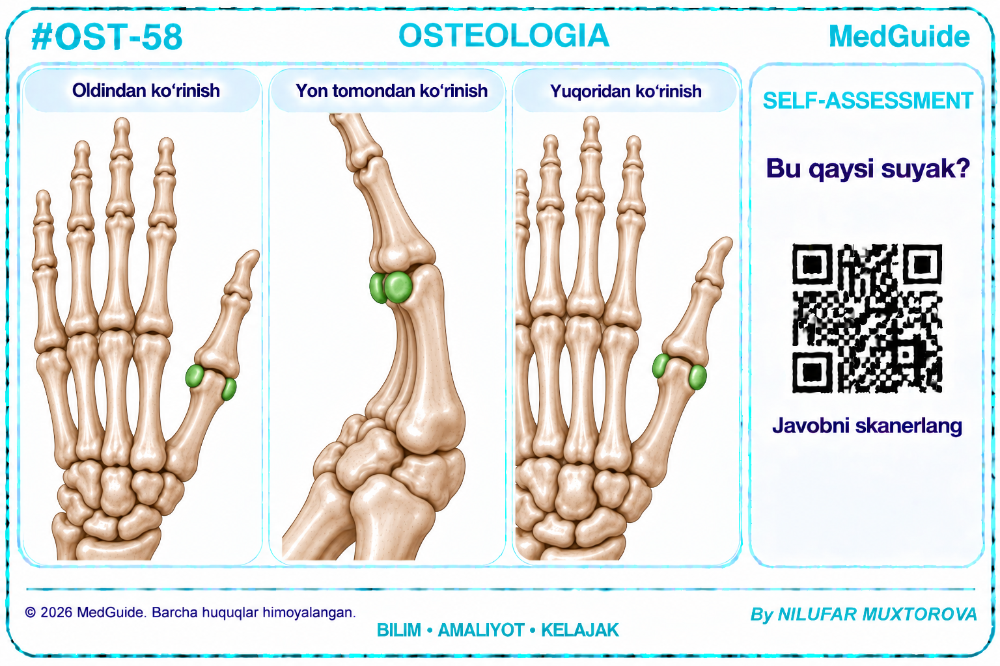
#OST-58: Ossa sesamoidea manus (Qo'l kafti sesamoid suyaklari)
- LA: Ossa sesamoidea manus
- UZ: Qo'l kafti sesamoid suyaklari
- EN: Hand sesamoid bones
- RU: Сесамовидные кости кисти
- TR: El sesamoid kemikleri
Muskul paylari orasida joylashgan kichik qo'shimcha suyakchalar.
Paylarning harakat traektoriyasini o'zgartirib, mexanik kuchini oshiradi.

#OST-59: Ossa sesamoidea pedis (Oyoq kafti sesamoid suyaklari)
- LA: Ossa sesamoidea pedis
- UZ: Oyoq kafti sesamoid suyaklari
- EN: Foot sesamoid bones
- RU: Сесамовидные кости стопы
- TR: Ayak sesamoid kemikleri
I-oyoq barmog'ining kaft-falanga bo'g'imi tagida ikkita doimiy suyak joylashadi.
Yurish vaqtida og'irlikni tekis taqsimlaydi va amortizatsiya qiladi.

#OST-60: Fabella (Tizza sohasi kichik sesamoid suyagi)
- LA: Fabella
- UZ: Fabella
- EN: Fabella
- RU: Фабелла
- TR: Fabella
M. gastrocnemius payi ichida uchraydigan o'zgaruvchan kichik sesamoid suyak.
Tizza bo'g'imining orqa-tashqi qismida joylashadi.